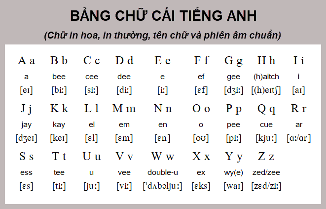

Speaking
Luyện nói tiếng Anh từ những tình huống đơn giản.
Danh sách bài Speaking
Speaking 01 – Pronunciation basics
Foundation
Làm quen với phiên âm quốc tế (IPA) và cách phát âm tiếng Anh cơ bản.
1. Phiên âm (IPA)
Tiếng Anh sử dụng bảng phiên âm quốc tế (IPA) để biểu diễn âm thanh. Mỗi ký hiệu tương ứng với một âm, không phụ thuộc vào cách viết.
Ví dụ:
- cat → /k/ /æ/ /t/
- pen → /p/ /e/ /n/
- book → /b/ /ʊ/ /k/
Khi học phát âm, ta đọc âm, không đọc tên chữ cái (A, B, C).
2. Phụ âm (Consonants)
Phụ âm được tạo ra khi luồng hơi bị cản lại bởi môi, răng hoặc lưỡi.
- /p/ – pen
- /b/ – book
- /t/ – tea
- /d/ – day
- /k/ – cat
- /g/ – go
3. Nguyên âm (Vowels)
Nguyên âm được phát âm khi luồng hơi đi ra tự do. Đây là phần khó nhất đối với người học tiếng Anh.
- /ɪ/ – sit
- /iː/ – see
- /e/ – bed
- /æ/ – cat
- /ʊ/ – book
- /uː/ – food
4. Cách luyện
- Đọc to từng âm, không đọc chữ cái
- Đọc trước gương để kiểm soát khẩu hình
- So sánh cặp âm dễ nhầm: /ɪ/ – /iː/, /ʊ/ – /uː/
- Ghi âm và nghe lại
Ghi chú: Tên chữ cái (Alphabet)
